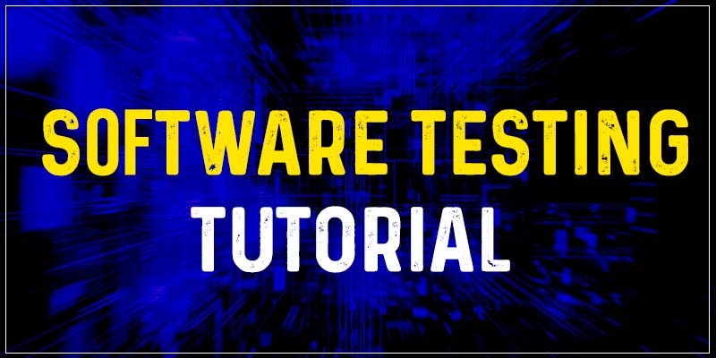

Overview
Software Testing tutorial covers all the basic and advanced concepts of software testing technology. Our Software Testing tutorial is mainly designed for freshers, testing aspirants and other IT professionals.
Our Software Testing tutorial includes all the concepts such as Software Testing Principles, Software Development Life Cycle, Software Testing Life Cycle, Types of Software Testing, Levels of Testing and Test Maturity Model.
The Testing Tutorial will be helpful for everyone including freshers, experienced professionals and everyone involved in the Software Development Processes.
What is Software Testing?
Software Testing Technology is nothing but a part of the Software Development Life Cycle which is used to test the software products/services so that it is free of errors, bugs and flaws. Software Testing is necessary and essential as it helps businesses to deliver quality and user-friendly products to customers.
In technical terms, Software testing is the process of checking the execution of software components and reviewing all of its properties to ensure that it is accurate (reliability, scalability, portability, reusability, and usability).
Software testing ensures the acceptability of software by providing an objective and unbiased review. It necessitates putting all components through their paces while providing vital services to see if they meet the requirements. The client is also notified about the software's quality as part of the process.
Because the software would be dangerous if it failed at any point owing to a lack of testing, therefore testing is required. As a result, software that has not been adequately validated cannot be provided to end-users. The Testing Tutorials majorly help everyone involved in the Software Development processes to understand the tutorial from beginning to end.
Types of Software Testing
1. Manual Testing
Manual testing is the practice of checking an application's operation according to the needs of the customer without the use of automation technologies. We don't need any specific knowledge of any testing technology to perform manual testing on any application, instead, we need a thorough grasp of the product so that we can quickly produce the test document.
Manual testing is further classified into three types, as follows:
- White Box Testing
- Black Box testing
- Gray Box Testing
The Concepts of Software Testing are many. So once you read the tutorial you will understand it elaborately.
2. Automation Testing
Automation testing is the process of transforming manual test cases into test scripts using automation technologies or any computer language. We can improve the pace of our test execution with the help of automation testing because no human labor is required. We'll need to write a test script and then run it.
FITA Academy’s Testing Tools for Beginners is elaborately explained through this tutorial.
Software Testing Principles
Software Testing is the process of putting software or an application under testing in order to find flaws or issues. To make our products defect-free, we must follow basic rules when testing an application or software, and this also aids the test engineers in testing the software with their work and time. We'll learn about the seven fundamental concepts of software testing in this part.
Let's take a look at each of the seven testing principles one by one:
- Testing reveals the presence of flaws.
- It is not possible to do exhaustive testing.
- Early Testing
- Defect Clustering
- Pesticide Paradox
- Testing is Context Dependent
- The absence of errors fallacy
1. Testing reveals the Presence of Flaws
The test engineer will run the program to ensure that it is free of bugs and faults. We can only determine whether or not the application or software has any flaws during testing. Because the entire test should be traceable to the customer demand, which means to uncover any defects that can cause the product to fail to fulfill the client's needs, the major goal of testing is to determine the number of unknown bugs using various methodologies and testing approaches.
We can reduce the number of flaws in any application by testing it, but this does not guarantee that the application is defect-free, as software can appear to be bug-free while undergoing many forms of testing.
2. It is not possible to do Exhaustive Testing
During the actual testing process, it may appear to be difficult to test all of the modules and their features with effective and ineffective combinations of input data.
As a result, rather than conducting comprehensive testing, which necessitates countless conclusions and the majority of the hard work is in vain. Because the product timelines will not allow us to do such testing scenarios, we can complete these types of variants according to the relevance of the modules.
3. Early Testing
Early testing means that all testing activities should begin in the early stages of the software development life cycle's requirement analysis stage to identify defects, because if bugs are discovered early, they can be fixed quickly and for a lower cost than bugs discovered later in the testing process.
To undertake testing, we will need the requirement definition papers; as a result, if the requirements are improperly described, they may be corrected immediately rather than later in the development phase.
4. Defect Clustering
Defect clustering means that we can detect the amount of issues that are linked to a limited number of modules during the testing process. We have a number of reasons for this, including the fact that the modules could be intricate, the coding component could be difficult, and so on.
These sorts of software or applications will adhere to the Pareto Principle, which claims that about 80% of the complexity is found in 20% of the modules. We can find the unsure modules using this method, but it has drawbacks if the same tests are run on a regular basis, as the same test will not be able to detect new faults.
5. Pesticide Paradox
This principle states that if we repeat the same set of test cases over a period of time, we will not be able to identify new flaws in the program or application. It is critical to evaluate all test cases on a regular basis in order to overcome these pesticide contradictions. In addition, new and varied tests must be designed for the implementation of several components of the application or program, which aids in the discovery of further defects.
6. Testing is Context Dependent
Testing is a context-dependent principle, which implies that we have numerous fields available in the market, such as e-commerce websites, commercial websites, and so on. Because each application has its own needs, features, and functionality, there is a clear technique to test both commercial and e-commerce websites. We will use numerous types of testing, distinct techniques, methodologies, and many methods to examine this type of application. As a result, testing is dependent on the application's context.
7. The Absence of Errors Fallacy
We can say that the application is 99 percent bug-free once it has been thoroughly tested and no issues have been discovered prior to its release. However, there's a potential that testing the program alongside inaccurate specifications, identifying defects, and fixing them within a set time frame won't assist because testing is done on the incorrect specification, which doesn't relate to the client's requirements. The lack of error fallacy states that detecting and correcting defects will be ineffective if the application is impracticable and unable to meet the client's needs.
The Software Testing Course or Software Testing Training in Chennai is a major training program held for Software Testing aspirants to master the Software Testing Technology.
Software Development Life Cycle
The software development life cycle (SDLC) is a method that establishes a framework for software development. Within the SDLC, there are several phases, each with its own set of activities. It enables the development team to build, design, and execute high-quality products.
The SDLC explains the various phases of software development as well as the sequence in which they are completed. In a software development life cycle, each phase demands deliverables from the previous phase. Requirements are translated into design, design into development, and development into testing, with the final product being delivered to the client following testing.
Different Phases of The Software Development Cycle
- Requirement Phase
- Design Phase
- Build/Development Phase
- Testing Phase
- Deployment/Deliver Phase
- Maintenance
1. Requirement Phase
For both the development team and the project manager, this is the most critical phase of the software development life cycle. During this phase, the client specifies the product's or software's requirements, specifications, expectations, and any other particular requirements. All of this is obtained by the service provider's business manager, project manager, or analyst.
To establish the load of activities, the need comprises how the product will be utilized and who will use it. All of the information obtained during this phase is crucial for designing the product to meet the needs of the consumer.
2. Design Phase
According to the requirement phase, the design phase comprises a complete analysis of new software. Because the conceptual design of the system is turned into a physical design, this is a high-priority phase in the development life cycle of a system. The requirement phase produces a list of things that must be done, and the design phase determines how these requirements will be met. This step involves deciding on all necessary essential tools, such as a programming language like Java, .NET, PHP, a database like Oracle, MySQL, and a mix of hardware and software to offer a platform on which software may execute without error.
For documenting the system design, several methodologies and tools such as data flow diagrams, flowcharts, decision tables, and decision trees, as well as the Data dictionary and the structured dictionary, are employed.
3. Build/Development Phase
The next stage is to incorporate the design into the construction of a software system when the requirement and design phases have been completed successfully. Work is divided into small units in this phase, and coding begins by a team of developers in accordance with the design negotiated in the previous phase and the client's requirements discussed in the requirement phase to generate the intended outcome.
Back-end developers execute back-end coding according to the action plan, while front-end developers create simple and attractive GUIs and necessary interfaces to communicate with back-end processes. Everything is carried out in accordance with the project manager's instructions and requirements.
Because this is the coding step, it takes the most time and requires a more focused approach.
4. Testing Phase
Testing is the final phase in the development of a software system. After receiving the built GUI and back-end combo, this phase involves testing it against the requirements specified in the requirement phase. Testing examines whether or not the program is producing the desired results as outlined in the requirements phase. To begin the test, the Development team creates a test plan. This test strategy comprises integration testing, unit testing, acceptability testing, and system testing, among other types of testing. This phase also includes non-functional testing
5. Development/Deliver Phase
After software testing has yielded a satisfactory result and there are no residual difficulties with the software's operation, it is released to the customer for usage.
Customers are encouraged to begin beta testing as soon as they acquire the product. Customers can request any improvements not existing in the product but specified in the requirement document, as well as any additional GUI adjustments to make it more user-friendly, during beta testing. Aside from that, if a customer encounters a defect while using the software, the problem will be reported to the product's development team, who will resolve the issue. If the problem is serious, the development team works quickly to resolve it.
The software was finally distributed to the end-user after all issues and changes were resolved.
6. Maintenance
The maintenance phase of the SDLC is the final and longest, as it is the process that continues until the software's life cycle is completed. When a consumer begins to use software, actual difficulties begin to arise, and there is a need to resolve these issues. This phase also entails making changes to hardware and software in order to maintain operational effectiveness, such as improving performance, improving security features, and meeting client expectations in the near future. Maintenance is the process of looking after a product from time to time.
"So, these are the six phases of the software development life cycle (SDLC), which govern the software development process. All are required phases, and development would be impossible without any of them because development continues throughout the software's lifetime with the maintenance phase".
SDLC Models (Software Development Life Cycle Methods)
Software Development Models are of many types and are selected based on a particular project which means the development of a particular application. To cater to different application needs we have different types of Software Development Life Cycle Models. These models tell the number of processes involved in the development of an application. Choosing the right model is important because they define the process of developing the particular software application.
The List of various Software Development models or strategies are,
- Waterfall Model
- Spiral Model
- Verification and Validation Model
- Prototype Model
- Hybrid Model
1. Waterfall Model
This is the first-sequential linear model in the Software Development Life Cycle. The sequential model is nothing but the output of one stage is the input of the next stage. The first model is easy to comprehend. The various levels of the waterfall model are as follows.
- Requirement analysis
- Feasibility
- Design
- Coding
- Testing
- Installation
- Maintenance
2. Spiral Model
Spiral Model is selected whenever companies are choosing a medium-level project. It is otherwise called the Cyclic and Iteration Model. Whenever the modules of a project are dependent on each other, Spiral Model is selected. The different stages in the Spiral Model are,
- Requirement Collection
- Design
- Coding
- Testing
3. Prototype Model
Prototype Model is chosen when we don’t want any customer rejection to happen too often. Prototype Model also businesses to create a sample before starting the original project. This helps them in many ways from cost-cutting to building reliable and suitable applications. The model is called the Prototype model because it helps us to create the sample or the Prototype of the application and is hence named as Prototype Model.
4. Verification and Validation Model
The verification and validation Model are nothing but the extended version of the Waterfall Model. This model implements the application in two phases one is the verification model and the next is the validation model. The verification model is implemented before the application is ready and the Validation model is implemented after the application is ready. The implementation process happens in the V shape which means the Verification Process is in the downward flow and the Validation Process in the Upward flow.
5. Hybrid Model
The Hybrid Model is implemented when we need properties of two models in a single model. The model is suitable for all kinds of projects namely small, medium and large because it is too easy to implement and also understand.
The combination of two models could be
- V and Prototype
- Spiral and Prototype
Software Testing Life Cycle
The process of Testing the software is also called Software Testing Life Cycle (STLC) which includes all phases that are there in the Software Testing process. The Testing process should be executed in a Systematic and well-defined manner. There are different steps involved in the Software Testing Life Cycle, which are
- Requirement Analysis
- Test Plan Creation
- Environment Setup
- Test Case execution
- Defect Logging
- Test Cycle Closure
1. Requirement Analysis
The first step of the testing process is requirement analysis. In this Phase, the testing Engineer analyses the particular document of the Software Development Life Cycle to study the requirements given by the client. After studying all the requirements, the testing engineer will review whether the developed software has met all the requirements or not.
2. Test Plan Creation
Test Plan creation is the important stage of the Software Testing Life Cycle where all of the Testing strategies are defined. Only the Testing Engineer can determine the necessary cost of the entire project till its completion and its submission. The Test Plan Creation phase takes place only if the Requirement analysis phase is completed. The strategies involved in the Test plan Creation and the efforts done in the Phase are determined in the Test Plan creation. Once the Test Plan Creation is completed, Test case execution is conducted. Learners enrolling in a Software Testing Course in Trichy can gain a clear understanding of how to design effective test plans and execute them efficiently within real-world projects.
3. Environment Setup
Setting up the environment activity is a separate activity but it can be done along with the Test Case Development. This is the mandatory part of the Manual Testing procedure without it we cannot perform the Environment Testing. Environment Setup is an inclusion of the necessary hardware and software to set up the Test Environment. The Testing team is not responsible for creating the Test environment but it is the Senor Developers who set up the environment for them.
4. Test Case Execution
Test case execution comes right after the Test Plan creation process. During this phase, Testing Engineers and their team starts case development and execution activity. Moreover, the testing team writes down the detailed test cases, also prepares the detailed test data if required. The test cases are then reviewed by fellow Test engineers or Quality Assurance Leader.
Requirement Traceability Matrix is also done in this phase. Requirement Traceability Matrix is an industry-oriented format used for tracking requirements. Each one of the test cases is paired with the requirement specification. Backward and forward traceability is also possible with the Requirement Traceability Matrix (RTM).
5. Defect Logging
Testing Engineers and Developers determine the completion criteria of the software depending upon the Test coverage, quality, time consumption, cost, quality and important business objectives. This phase is imperative as it evaluates the characteristics and drawbacks of the software. Here test cases and bug reports are analyzed deeply to find the defects and their effect.
Defect Logging mainly works on the principle of finding the defect distribution. If at all, any defect is detected, the software product or service is returned to the development team who checks the ins and outs of the software from the beginning.
After the test cycle is fully completed, the closure report and test metrics are prepared.
6. Test Cycle Closure
The Test Cycle Closure is the final stage in the Software Testing Cycle and the report is inclusive of all the documentation related to Software Design, Development, Testing Results and Defect reports.
This phase is also responsible for estimating the strategy of development, testing procedure and determines the possible defects in order to use these practices in the future if there is again a requirement for the development of Software applications with the same features.
Levels of Testing
Testing levels are implemented to find the missing areas and to avoid overlapping and repetition between the development life cycle stages. As same as the Software Development Life Cycle phases, Testing also has some levels which help the Testing engineers to maintain the quality of the software.
In Software Testing, there are four different levels of Testing which will be discussed below.
- Unit Testing
- Integration Testing
- System Testing
- Acceptance Testing
Unit Testing
Unit Testing is the first level in Software Testing which tests each separate software module and its functions.
The purpose of testing each separate software module is to determine whether each of them functions as per the requirement. In technical terms, it is said as, evaluating each unit or an individual component of the software application. Unit testing is again the first level of functional testing. The ultimate purpose of executing unit testing is to verify unit components of their performance.
Unit Testing majorly helps Test Engineers and Developers in understanding the base of the code through that helps them to change the defect causing code quickly.
Integration Testing
Integration Testing is the second level of testing which comes after the Unit Testing.
The major purpose of implementing Integration Testing is to used to test the data flow from one module or component to other modules. In other words, it can be said as, identifying the defects in the interaction between the integrated components or units. When each software component or module works separately, it is necessary to check the data flow between the dependent modules and this process is known as Integration Testing.
In a simple way, we can say Integration testing strives for finding any defect in the accuracy of the data flow between the modules.
System Testing
System Testing is the third level of testing which tests the software’s functional and non-functional requirements. It is also known as end-to-end testing where the testing environment is parallel to the production environment. When we are implementing the System Testing we will be testing the entire application. Checking the end-to-end working of the Software or an application is called System Testing. During System Testing, Testing Engineers will go through all the modules of software applications and test if the end features or end business works fine for the users by testing the product as a complete system.
Acceptance Testing
The final and fourth level of testing is Acceptance testing which checks whether the developed software product works fine during its delivery. Even though the software product passes through all the levels of testing like Unit Testing, Integration Testing and System Testing, three might be some minor defects, errors or bugs in the code that can be present when the end-user uses the software product. In other words, we can say, Acceptance Testing is trying to put the Application under the test of the above three Software Testing levels at once. Learners who wish to explore this process in depth and gain practical experience can enroll in a Software Testing Courses in Erode.
Acceptance Testing is also called User Acceptance Testing (UAT) since the client checks the product one last time before its delivery in the IT market. The UAT is done by the Client for their satisfaction with the product.
Test Maturity Model
Under Test Maturity Model, we are going to explore about four important topics.
- What is Test Maturity Model?
- The five levels in the Test Maturity Model
- Difference between TMM and CMM
- Advantages of the Test Maturity Model
What is the Test Maturity Model?
Test Maturity Model is one of the Testing models that is developed with a set of structured levels and is based on the Capability Maturity Model (CMM). Test Maturity Model has made the testing process more useful and beneficial because it is built as a detailed testing model with space for improving the testing process. The need for the Test Maturity Model is to provide Maturity and Targets to improve the Software Testing process in order to fulfill the development stage. It can also perform as a Standalone Model or work along with any Process Improvement Model.
The necessity of Test Maturity Model (TMM) in the Software Testing Process
- The Test Maturity Model greatly enhances the Software Testing Process.
- Deploying the Test Maturity Model has proven to improve the test process, software quality and test engineering.
- Other testing models like the Capability Testing Model deliver limited consideration to testing. Therefore, we need an efficient testing model like TMM, specifically built to improve the Software testing process.
- Though attempts were made to broaden the testing process, nothing has been proven as efficient as the TMM Model.
- The TMM Model is capable of helping the Testing Engineers to bring down the defects to zero.
- The Test Maturity Model is a Testing Process improvement Model that can be integrated with other process development models and can also be used as a standalone model.
Levels in Test Maturity Model
The Test Maturity Model totally contains five levels that help businesses to implement the testing process with maturity. These five levels will help businesses to move ahead in the development process. The five levels are,
- Initialization
- Definition
- Integration
- Measurement and Management
- Optimization
Let us see about each one of the levels in detail.
- Initialization
- Definition
- Integration
- Measurement and Management
- Optimization
Initialization is the first level in the Test Maturity Model. There is no actual defined testing process of the first level of TMM. The use of the initialization level is to make sure that the software gets executed as per the needs and there is no obstruction in between. At the initialization level, Explanatory or Adhoc Testing is performed on the software and no additional quality checks are performed on the software before delivering the product.
The Second level is the Definition level. In the Definition Stage, all the requirements are defined, test strategies, test plans and test cases are created so that the development team can build a product that meets all the client’s requirements. The main purpose of this level is to make sure that all the requirements are properly defined, testing strategies are in accordance with the requirements.
The third level is the Integration level and the main purpose of the Integration level is to make sure that the testing process is integrated with the Software Lifecycle and becomes a part of it. The complete testing objective is based on risk management as the testing is implemented independently.
In this fourth level, testing becomes part of all the activities in the Software Development Life Cycle. Implementing this level ensures that the Test Measurement Program is established. To determine the quality of the testing, reviewing, requirements gathering, design of the software are all included.
The final level is the Optimization level. The main purpose of the fifth level is to optimize or enhance the testing process overall. In other words, we can say that the testing processes are verified and steps are taken to further improve the testing process. At this level, quality control and bug inhibition are performed. During this level, the main focus is on defect prevention rather than defect detention and there are many tools to perform this level of testing.
The Difference Between CMM and TMM
Capability Maturity Model
Capability Maturity Model is nothing but assessing the maturity of an organization’s software processes. It also has the capability to control the software development procedures. Capability Maturity Model Integration mainly focuses on Software Development practices.
Test Maturity Model
Test Maturity Model is checking the quality of the Software Testing Model. It can be used as a framework along with the Capability Maturity Model. The entire focus of the TMM framework is on the processes that are applied to Software testing to improve the quality and efficiency of the testing process.
Advantages of Test Maturity Model
- Defect Prevention
- Organized
- Well-defined requirements
- Quality Assurance
As we saw above, TMM focuses on Detect Prevention rather than defect detection by making the testing process a part of all phases of the Software Development Life Cycle. The Testing Maturity Model can also make sure all the defects are identified and the final product is completely defect-free.
The Test Maturity Model is a framework of a five-level structure and by that, we can conclude each level is well-defined and has a specific purpose to achieve we can say that Test Maturity Model is well-organized with strong objectives.
When the necessities of the software such as designs, test plans and test cases are well-defined it is easy to achieve more accurate testing.
When we integrate Testing with all the phases of the Software Development Life Cycle, maximum quality is achieved for the product. Also, when we analyze the test processes, it would improve the outcome which is the quality of the product.
SDLC Models in Detail
We have already seen about the SDLC Models and their stages but let us see in-depth about each stage of the SDLC Models.
There are five models that constitute the SDLC Models which are the Waterfall Model, Spiral Model, Hybrid Model, Prototype Model, and V Model.
Waterfall Model
The Waterfall model is divided into various stages which are the
- Requirement Collection
- Feasibility Study
- Design
- Coding
- Testing
- Installation
- Maintenance
1. Requirement Collection
Requirement Collection is the first stage of the Waterfall Model. In this stage, the Business Analyst will arrange or list all the requirements of the clients for their software product/service and prepare it as a document. This document should be easy to read and understand and all the documents should be clearly listed.
By taking the help of Customer Requirement Specification (CRS) and Business Requirement Specification (BRS), SRS is generated which is Software Requirement Specification and this SRS document is inclusive of all the things that should be designed and developed.
Features of a Functional Requirement
- The requirements should be listed in precise and simple language that should be easily understandable.
- The requirements should be in the proper flow.
- The requirements should also be countable.
2. Feasibility Study
The feasibility study depends on the needs of the project where many personnel such as Human resource professionals, Business Analysts and Architectures assess whether the project can be done or not. To deploy a good project we should follow various characteristics that are based on the customer requirements.
|
Aspects |
Description |
|
Legal |
Can the business handle the project as per the legal and other agreements? |
|
Technical |
Check whether the available machines supports the development of the software or not? |
|
Operation Feasibility |
The company should have all the necessary equipment and professionals to start the operation. |
|
Economic |
Can the company successfully complete the development of the product within the given budget or not? |
|
Schedule |
Can the project be completed within the given time or not? |
3. Design
Once the feasibility study is prepared, the Development team will move on to the next stage which is Designing. In this stage, the architecture of the product is created with the help of some essential tools, a combination of hardware and software, various other programming languages like PHP, Java, .Net and databases like MySQL and Oracle. Finally, the designer gets ready with the plan for the software application which is divided into two parts.
- High-level Design
- Low-level Design
High-level Design (HLD)
In the high-level design, the Designer concentrates only on the design models such as decision trees, flow diagrams, decision tables, flow charts and data dictionaries.
Low-level Design (LLD)
In low-level Design, the Designer will concentrate on factors like User Interface (UI), User Experience (UX) and the like.
4. Coding
After the designers are done with the design stage, developers will move on to the coding stage, which is nothing but the development stage. In the Development stage, developers make use of the programming languages depending on the project they are working on. It can be any programming language like Java, Python, C C++, C#, etc.
In development, there are two types. One is Front-end development and the other is Back-end development. Front-end developers deal with the GUI of the application, whereas back-end developers will take care of the database and server support.
5. Testing
Testing is the fifth stage in the waterfall model. Once the front-end and back-end development are completed, the application is ready for the testing stage. The Testing engineers are responsible for testing the Software Applications. They test the applications according to the clients’ requirements.
While testing the applications, the testers may find errors in the coding or find some features of the applications are not working properly. If he encounters any of these problems, he will revert back the application to the development team stating about the errors he found. Once the errors are fixed by the development team, the testing engineer will again re-test the application and check whether the errors are properly fixed.
6. Installation
Once the application is completely tested by the Testing engineers and have approved the application as free of bugs and stable, the application enters the installation stage. In this stage, the approved application is delivered to the client and is installed in the client’s software environment. There the application is again tested by the Client for any errors or bugs. If they encounter any bugs or errors, the client will inform the development team and ask them to fix them. If not, the application is ready for end-users use.
7. Maintenance
The final stage is the maintenance stage. Once all the stages are completed and the Software application is also delivered for the end-users’ use, the maintenance stage comes into the picture. The end-users may find some defects in the working of the application which is fixed in the maintenance stage. Also, maintaining the product from time to time is called maintenance which also includes the up-gradation of the software and the variations done in the hardware.
These are the various stages of the waterfall model and the process involved in it.
Example of the Waterfall Model
The Waterfall Model was earlier used in delivering applications for Human Resource Management (HRM), Supply Chain Management System, Customer Relationship Management (CRM) and Retail Chains etc. But presently waterfall models are replaced by Iterative Models and Agile Methodology, etc.
Pros and Cons of the Waterfall Model
|
Pros |
Cons |
|
In the waterfall model, the requirements can be clearly stated. |
The Waterfall Model has no parallel deliverable. |
|
The waterfall model fits for smaller projects. |
The waterfall model is not capable of providing required changes and reviews. |
|
The Model is easy to understand as well as easy to use. |
When the waterfall model was launched, testing concept was not popular. |
|
Proper arrangement of tasks is possible in the waterfall model. |
When performing the tasks changes cannot be done as one stage is dependent on another stage. |
|
In the Waterfall model, release level changes are possible. |
Backward tracking is not possible. |
|
In this model, results can be well-documented. |
The waterfall model consumes too much time. |
Spiral Model
One of the disadvantages of the Waterfall model is it consumes too much time to deliver the product and when that happens, the software becomes outdated. To solve this issue another model is followed which is called the Spiral model also known as Cyclic Model.
In Cyclic Model, the Application is developed module by module and finally handed over to the customer so they can start using the application at the early stage. The Spiral model can be chosen only when the modules are dependent on each other. In the Spiral model, the application is developed only in stages because the customers might give or change the requirements in between.
There are four different stages in the Spiral Model. Let us now discuss each stage of the Spiral model in depth.
- Requirement Analysis
- Design
- Coding
- Testing and Risk Analysis
Requirement Analysis
The first stage in the Spiral Model is the requirement analysis where requirements are collected for the client’s product development. In the requirement stage, the following stages include the documentation of System requirements, Unit requirements and subsystem needs. During this stage, the business analyst and the client has constant communication to deliver the product successfully. Once this stage is completed, the application is delivered in the app market.
Design
The Second stage is the Design stage, where the design of the software application is planned. It includes stages like planning the logical design, architectural design, flow charts, decision tree, etc.
Coding
Once the design stage is completed, the development team takes care of the coding stage. They build the product based on the client’s requirements as well as feedback. In the Spiral Model, every team involved in the development of the product has a clear vision of its requirements and therefore they come up with builds having version numbers, particularly the development or the coding team. Once the builds have been developed, they are transferred to the client for their responses and feedback.
Testing and Risk Analysis
The fourth and final stage is the Testing and Risk Analysis stage. After the clients give their responses and feedback, the development team provides a final product. The final product is then moved to the testing team where the testing engineers will test the product and also analyze the risk factors in them on different aspects such as discerning the risks, controlling the risks and being mindful of its technical feasibility. Once the testing team completes their work, the software application is handed over to the client. The Client tests the product and gives their feedback.
Pros and Cons of the Spiral Model
|
Pros |
Cons |
|
The Spiral Model is flexible thus allowing changes in between. |
It is not a good fit for small projects because it costs too much for them. |
|
In the Spiral model, the development stage is distributed into smaller parts. |
Since it is a traditional model, advanced projects cannot be done. |
|
The Spiral model allows the clients to use the applications at an early stage. |
Parallel deliverables are not allowed in the Spiral Model. |
|
There is much preciseness for Developers as well as Test Engineers. |
The disadvantage is managing the process as it is a little bit complex. |
|
Prototypes can be widely used here. |
Since the intermediate phases are high in number, maximum paperwork is needed. |
Hybrid Model
Hybrid Model is nothing but the mix of two or more primary models also called traditional models and modifies them as per the business requirements. This model is based on other models such as Spiral, V and V and Prototype Models. The hybrid model is predominantly used for all kinds of projects small, medium, and large. Its main focus is on the risk management of the product.
The Hybrid Model can be chosen when we want to have two features of a model in a single model. It is also considered when the client is new to the industry.
The majorly used combination of two models are,
- Spiral and Prototype
- V and V Prototype
Spiral and Prototype
- Spiral and Prototype Model are chosen whenever there is dependency.
- When customers can give requirements in stages this model is chosen.
- When the customer is new to the software domain.
- When developers have no knowledge of the particular software.
V and V Prototype Model
The model is chosen for two reasons.
- Clients and developers both don’t know the Software domain since they are new to the industry.
- When customers expect a sophisticated product within the stipulated time because every stage is tested since the development team and testing team are working side by side.
V and V Prototype Model Process
In the V and V Prototype Model process, the testing team is involved to test the prototype. In this process, the testing also starts from the early stage of product development which restricts the number of bugs that helps the team to reduce the re-work.
The V and V Prototype Model Process can be completed in the following four steps.
Step 1
Step 1 starts with collecting the business need as CRS documents and testing engineers will do the following:
- Reassess the CRS
- Create the User Acceptance Test case and Test Plans
Step 2
In Step 2, the Business Analyst will convert this CRS document to SRS document and web developers will design and develop the prototype, pass it to the testing engineers and they will test the following.
- At first, they will reassess the SRS document
- Second, they create the system testing cases and test plans.
Step 3
In Step 3, the testing engineers will check the prototype, find the bugs and send it to the concerned developers. After the Prototype testing is done, it is sent for the client’s review and approval.
Step 4
After the customer reviews it, developers will design the high-level design of the prototype and pass it to the testing team where they will do the following.
- Reassess the HLD.
- Develop Integration Testing Documents.
Step 5
After the high-level design of the prototype is completed, developers will design the low-level design and send it to the testing engineers where they will do the following.
- Reassess the Low-level Deisgn
- Create functional test cases and test plans.
Step 6
In the final step, developers will start writing the code for the particular prototype, do one stage of white box testing from their side and send it to the testing engineers to do the next steps involved in testing.
The final process will go on till the modules and prototypes are stable and finally get delivered to the customer.
Pros and Cons of Hybrid Model
Pros
- The Hybrid Model is not fixed and thus it will be easy to perform the testing process.
- The Hybrid Model gives less rejection rate which is because of the prototype.
- The Hybrid Model is easy to deploy since it has the flexibility of Synchronization.
- It is easy to utilize with particularly small and medium projects.
- The final advantage is that the development process will be smooth and quick since only relevant process cycles are followed.
Cons
- Each Hybrid model is distinct from the other.
- They don’t follow the usual standards.
Prototype Model
The Prototype Model is the fifth model of the SDLC and is considered to be the advantageous model in the SDLC. Prototype Model is nothing but creating a sample of the product for the customer’s reference. Creating a sample of the product and getting it approved by the customer will not lead to customer rejections often and that is the biggest advantage in choosing the Prototype Model.
This advantage is lacking in the previous models like Waterfall and Spiral Model. So once the customer approves the Sample of the Product, the development team and testing team will perform the Prototype Testing.
Prototype Model Process
The Prototype Model has various which we can see in-depth below.
- Requirement Analysis
- Feasibility Study
- Creating a Prototype
- Prototype testing
- Customer Assessment and Approval
- Design
- Coding
- Testing
- Installation and Maintenance
1. Requirement Analysis
In this stage, the basic requirements are collected from the clients in detail. The details are collected by the Business Analyst and Product Analyst. The Business Analyst and Product Analyst both take each responsibility. Business Analyst takes care of Service-based software companies and the Product Analyst takes care of Product-based Software companies.
2. Feasibility Study
The next stage is feasibility study creation. Here, the Business Analyst Head, Human Resource Head, Architecture Head and Finance Head will join together to talk about the crucial needs that are important of the project. They will be talking about funding for the product, employees they need, technology, and the time needed for the project.
3. Prototype Creation
Once the critical things are discussed, the third stage is developing the sample or dummy of the product. The sample of the product is created from the basic requirements that are collected and the developer starts creating the sample.
There are two types of Prototype creation.
- Static Prototype
- Dynamic Prototype
Static Prototype
Static Prototype is one way of creating the sample. This is done by creating a word document and filling it with all the details of requirements. This includes guidelines, screenshots, the process of building the software and the look-alike of the final product.
Dynamic Prototype
The Dynamic Prototype is the creation of the dummy Html page having tags and links to different pages to the expressive features of the product.
4. Prototype Testing
In this stage, the prototype testing is done for the sample product that is created.
5. Customer Review and Approval
This is the stage where the client reviews the sample product which is the Prototype. The client will review the Prototype thoroughly and give suggestions or feedback if any feature/part of the prototype is not proper/working. The process will go on till the customer approves and is happy/satisfied with the prototype. This process consumes time as changes can be made again and again.
6. Design
The next stage is the Design stage where Designers will join hands to develop the low-level design and high-level design for the approved Prototype. This includes all the suggestions and feedback of clients.
7. Coding
Once the design phase is over, the next team will take over the process which is the coding or the developer team. The developers in charge of the tasks start the process of developing with the necessary programming language.
8. Testing
After the development team finishes their tasks, the testing team takes over the process. Here the testing engineers are responsible for testing the functionality of the application and the inputs and outputs.
9. Installation and Maintenance
The final process is the maintenance process. When the product moves to the maintenance stage, day-to-day up-gradation, maintaining the hardware and software in a proper way is done.
The Software Testing Course in Madurai is held by FITA Academy precisely to help the Madurai based students to understand the Software Testing technology in a proficient way.
Advantages and Disadvantages of the Prototype Model
Advantages
- In the Prototype Model, missing functionality can be easily detected.
- Both the Development team and the client have precise communication regarding the requirements and outcome of the product.
- Customer Satisfaction is achieved through this model.
- The sample design can be re-utilized for similar applications.
- Customer rejection is also less compared in the Prototype Model to other levels.
- Any problems or issues in the software application can be easily identified in this phase.
Disadvantages
- The Prototype Model consumes much time because if the sample of the product does not satisfy the customer the sample has to be changed again. This in turn delays the start of the real project.
- In the Prototype model, only the Prototype is reviewed not the requirements.
- Parallel deliverables are not possible in the Prototype Model which means two teams cannot work together.
- The earned customer can be lost if they are not happy with the Original Prototype.
FITA Academy conducts the Software Testing Training in Tambaram for Tambaram-based students to make them Software Testing professionals and help them attain expertise in Software Testing technology.
V Model or Vand V Model or Verification Model and Validation Model
The V Model is primarily designed to overcome the drawbacks of the Waterfall Model. In this model, the testing is initiated from the requirement stage. In the V Model, all the activities first move toward the downward direction and then start moving toward the Upward direction forming a V shape. Thus it is called V Model or Verification and Validation Model.
When can we choose V and V Model?
We can choose V and V Model for the following reasons
- We can choose V Model for very complex applications. Here complex means dependency on modules.
- The V Model can also be chosen for long-term projects.
V and V Model Process
The V Model is split into two phases. One is the Verification phase where the product is reviewed and the other is the Validation Phase where the product is tested. That is the reason the model is called Validation and Verification Model.
The Verification and Validation Process gets completed in totally five stages.
Stage 1
The Process starts with initiating the Customer Requirement Specification by the Business Analyst which the testing engineer will check for the following requirements.
- Improper requirements
- Essential requirements
- Conflicts in the requirements
- Create Acceptance Test Documents
The Test Engineer checks the CRS document for any mistakes or bugs and if he finds any, he will revert it to the development team to fix the bugs. The development team fixes the bugs and updates the CRS and also develops the SRS document simultaneously.
Stage 2
After updating the CRS, the development team sends the developed Software Requirement Specification (SRS) to the testing team for the assessment. Then the development team starts creating the High-Level Design for the software application. Then the testing team takes the process forward by checking the SRS document.
The Testing team reviews Customer Requirement Specification against the Software Requirement Specification for the following reasons.
- The CRS is transferred to the SRS.
- CRS is not completely transformed to SRS.
- Create the System Test Documents.
Stage 3
Once the High-level Design is completed, developers start working with the Low-level Design of the application while the testing engineer will check the following tests on the High-Level Design.
- Assess the High-level Design
- Create Integration Test Documents
Stage 4
Once the Testing team assessed the High-Level Design, the developers start to write the coding and develop the application. After that, the testing team will perform the following tasks.
- Assess the Low-level Design
- Create Functional Test Documents
Stage 5
In Stage 5, the coding part is completed. After the product is developed, the developers will perform one round of unit testing which is also called white Box Testing. The Developers check every line of the code and make sure it is correctly written.
Once the Unit or White Box Testing is done, the application is sent to the testing team where they perform various kinds of testings such as functional testing, integration testing, system testing and acceptance testing. After all the testings are done, the application will be finally delivered to the client.
Advantages and Disadvantages of the V and V Model
Advantages
- In the V and V Model, the assessment takes place in every phase. That is the reason the product reverts less number of bugs.
- The V Model is capable of providing parallel deliverables which indicates that the two teams can work together.
- This model paves way for delivering stable and reliable products.
- In the V and V model, the Test Engineers can gain more knowledge about the Product since they will be involved in every phase of the development process.
- The document which records all the modifications can be re-utilized.
Disadvantages
- The Process costs a lot of money since the testing team is required from the starting stage itself.
- The process also consumes much time because the text document has to be changed every time if requirement changes happen.
- More Documentation work is needed as test cases and all other documents are needed.
- The V Model is not apt for Object-oriented Projects.
- The functionality cannot be replaced once the application moves forward to the testing phase.
FITA Academy conducts Software Testing Training in Velachery for Chennai as well as Velachery students to help them gain an astounding knowledge of the Software Testing technology.
Other Types of Testing
1. Regression Testing
Regression is one of the black box testing techniques. It authenticates a code change in the software and makes sure it does not impact the existing functionality of the product. The testing also ensures that the product works fine with new functionality after fixing all the bugs and making any changes in the existing feature.
To define regression testing precisely, it is a type of software testing where test cases are re-executed to check whether the previous functionality of the product is working fine. Regression testing is also known as the verification method. INn Regression Testing test cases are often automated and they are required to execute the program many times.
The Software Testing Training in Anna Nagar is conducted by FITA Academy for Chennai students as well as Anna Nagar students and professionals to gain knowledge about the Software Testing technology in the most understandable way.
2. Smoke Testing
The major aim of smoke testing is to know whether the build software is testable or not. The testing is done at the time of building the software. The name of this process is called “Day 0”.
During the Smoke Testing, only the positive flow of the application is tested. Here we should enter only the valid data and not the invalid data. Since we verify that every build software is testable or not, the smoke testing is also called bUild verification Testing.
The Software Testing Courses in Kolkata is conducted by FITA Academy for Kolkata-based students to help them gain knowledge regarding software testing technology efficiently.
3. Sanity Testing
Basically, Sanity Testing is performed on stable builds and is also otherwise called a Variant of Regression Testing. It is like checking whether can test the build or not.
In technical terms, it is defined as the testing that ensures whether all the defects have been solved and no additional issues arise. Sanity Testing can also make sure the modifications done in the code do not affect the associated modules.
4. Static Testing
Static Testing is one kind of verification process, used to test the application without executing the code. Because of this reason, it is a very cost-effective process. Static Testing is executed in the initial product development phase to eliminate the errors. Static Testing can identify the source of the errors when it is done at the initial phase of the development and the bugs can be fixed easily.
Static Testing can also be done manually or with the help of tools to enhance the quality of the application by finding the error at the early stage of the development process. The testing process is also called the verification process.
The Software Testing Course in Coimbatore held by FITA Academy helps the Coimbatore-based students to learn the Software Testing technology comprehensively and broadly.
5. Dynamic Testing
Dynamic Testing is one of the most imperative parts of Software Testing which evaluates the code’s dynamic behaviour. Dynamic Testing works with the software by giving input values and verifying the output. Dynamic Testing is done when the code is executed in the run time environment. This is a validation process where functional testing and non-functional testing are performed. As static Testing is a Verification process and Dynamic Testing is a Validation Process, together they assist us to deliver a cost-effective software product.
6. Load Testing
Load Testing is an essential part of performance testing under non-functional testing. In Load Testing, an application’s performance is checked by applying some load, which is only less or equal to the desired load. Here the load is nothing but the n-number of users utilizing the application at the same time or connecting to the server at a time. Load Testing will assist in detecting the maximum operating capacity of the application and any blockages or bottlenecks. The main use of Load Testing is to test the Client/Server’s performance and applications that are web-based.
FITA Academy conducts the Software Testing Courses in Trivandrum for Trivandrum students to help them learn the Software Testing technology broadly.
7. Stress Testing
Stress Testing is one of the important parts of performance Testing under non-functional Testing. Stress Testing can check the accessibility and stability of software beyond usual functional limits. It mainly focuses on critical software but can also be used for software applications. Stress Testing is otherwise called Endurance Testing, Fatigue Testing or Torture Testing. Stress Testing can also be used for testing beyond Operational Size repeatedly to get outputs.
It focuses on error handling and stability under a heavy load. In technical terms, it can be said that Stress Testing can verify the constancy and dependability of the system and also ensure the system would not crash under worse conditions. Also, stress testing is performed outside normal load to assess how the system works under extreme conditions.
8. Recovery Testing
Recovery Testing is done to assess how well the software application recovers when it is subjected to crashes or disasters. This is one of the most important types of software testing categorized under non-functional testing of performance testing. In other words, it can be said that recovery testing is performed to verify how quickly and better the application can improve or understand the capability of the software after going through any hardware, software crashes or network failures. When carrying out the recovery testing, first the backup is taken and stored in a secured location. This is done to keep away from data loss if the data is not recovered successfully.
The Software Testing Training in Ahmedabad is one of the best training programs conducted by FITA Academy for Ahmedabad-based students to learn the Software Testing methods and techniques proficiently.
9. Exploratory Testing
When requirements are not listed, one round of exploratory testing is done. First, the application is explored in all possible ways to understand the application's flow, prepare a test document, and test the application. This process is called exploratory testing.
FITA Academy conducts Software Testing Courses in Kochi for cochin students to help them gain the best industry knowledge about the Software Testing practices.
10. Visual Testing
Visual Testing is examining what happened at the point of software failure by defining the data in such a way that the developer can quickly understand the reason of the failure and the information is expressed clearly so that other developers can use the information. Visual Testing displays the actual problem rather than just describing it. So it remarkably increases the understanding and preciseness so that the problem is solved quickly.
The actual meaning of Visual is Optical which means what we can see. Therefore visual testing is recording the entire process. It records everything that happens at the time of system testing in video format. Therefore Testing Engineers gives a picture in a webcam and audio commentary through a microphone as an input value.
The Software Testing Course in Delhi is one of the best Software Testing courses offered by FITA Academy for Delhi students to help them learn the industry’s best software testing practices.
11. Acceptance Testing
Acceptance Testing is a formal testing method done after knowing the user requirements and function processing. It ensures whether the software has specified requirements and user requirements. It is performed as Black Box Testing and it is the last and fourth level of software testing.
User Acceptance Testing (UAT) is another type of testing which is done by the client before accepting the final product. Basically, UAT is done by the client for their satisfaction to check whether the final product is in accordance with the given requirements. In this type of testing, the focus is only on the features and scenarios that are often used by the Client or the features that are often used by the end-users.
Anyway, the software has passed through three testing levels (Unit Testing, Integration Testing and System Testing), but still there will be some minor errors that can be only identified when the software is used by the end-users.
FITA Academy conducts the Software Testing Courses in Mumbai also to help Mumbai Students study under the industry experts to help them gain first-hand knowledge of the Software Testing Technology.
12. Alpha Testing
Alpha Testing is performed by the representative group of end-users and sometimes by a group of Testing Engineers. It is real operational testing. Alpha Testing is conducted finally after all the testing are executed like Unit Testing, Integration Testing, etc. It can be either a White box or Black box testing which depends on the requirements like lab environment, simulation of the actual environment.
13. Beta Testing
Beta Testing is a type of User-Acceptance Testing and one of the most crucial testings which is performed before the release of the software. It is a type of field test which is performed at the end of the Software Testing Life Cycle. This type of testing is also called external user acceptance testing. It is also a type of Salient Testing that real users perform. Beta testing is carried out after the alpha testing. In the new version, Beta testing is allowed for a limited audience to test the accessibility, usability, functionality and more.
To gain proficient knowledge in Software Testing, join our Software Testing Course in Hyderabad which is handled by FITA Academy's professional training experts.
14. Database Testing
Database Testing is a kind of testing that tests the schema, tables and triggers of the Database under test. It also evaluates the data integrity and consistency. Also, stress test the Database and its responsiveness.
Basically, it is a layered process that is inclusive of the data access, User Interface (UI), the business layer along with the database layer.
In the Database testing, the following database activities are covered.
- Testing Data Integrity
- Checking Data Validity
- Performance Check relate
- Triggers and functions in the database.
- Testing various procedures.
FITA Academy’s Software Testing Training in Gurgaon is held by FITA Academy’s professional testing experts to help students master the technology.
15. Mainframe Testing
The major aim of performing Mainframe Testing is to ensure the dependability, performance and excellence of the application by verification and validation technique and check if it is ready to get implemented or not.
The Testing Engineer only needs to know about the CICS screens’ navigations while performing the mainframe testing as they are custom-built for specific applications and they do not need to worry about the emulator set up on the machine if any modification happens to the code in COBOL, JCL and so on.
16. Adhoc Testing
Adhoc Testing is performed when the build is in the checked sequence. Adhoc Testing is also known as Monkey Testing and Gorilla Testing. It is one of a kind of negative testing because we are testing the application against the client’s requirements.
Join FITA Academy’s Software Testing Course in Pune which is conducted for Pune’s students so that they can experience the same high-level training program to understand the testing technology in a better way.
17. Globalization Testing
Globalization Testing is nothing but testing the software that is developed for multiple languages is called Globalization Testing. Enhancing the software or application for various languages is called Globalization.
This testing makes sure that the application supports multiple languages and features because in today’s world we can see the improvement in several technologies as the applications are developed in such a way that is used globally.
FITA Academy’s QA Testing tutorials is the best tutorial that explains all the testing concepts, methods with examples and illustrations.
18. Mutation Testing
Mutation Testing is a white box testing method where errors are purposely inserted into a program to check whether the existing test cases are capable of finding the errors. In the Mutation Testing, the mutant of the program is created by doing some modifications to the original program. The main objective of the mutation testing is to check whether each mutant created an output that is different from the output of the original program. The changes should be only little because if we do it on a large scale it will affect the overall strategy. Mutation testing's aim is to assess the quality of the test case that should have the capacity to fail the mutant code therefore it is also known as Fault-based testing.
Mutation testing can be classified into three types which are,
- Decision Mutations
- Value Mutations
- Statement Mutations
Software Testing Course in Bangalore is held by professionals who have high-level knowledge of the Software Testing processes carried out in the IT domain.
19. Security Testing
Security Testing is an essential part of Software Testing which is used for discovering the weaknesses, risks or threats in the Software Application and thus helping us to stop the cyber attacks from outsiders.
The primary aim of Security Testing is to find the uncertainties and the weaknesses of the software application so it does not stop working. So if we perform security testing, it will help us to find all the security threats and help the programmers or coders to rectify the problem. It is a testing protocol that defines that the data will be safe and also ensures that the software is in the right condition.
Learn Testing at FITA Academy through industry experts who have maximum experience in Software Testing technology.
20. Accessibility Testing
Accessibility Testing is a type of Software Testing where the testing engineers test the software application from the physically challenged people’s point of view. The physical disability could be loss of vision, hearing impairment, colour blindness and other underprivileged groups. It is otherwise called as 508 compliance testing. In Accessibility Testing, the software application is tested for every kind of user to ensure they can access the application easily.
21. Structural Testing
In Structural Testing, the internal design of the software or the structure of the code is tested. Here development team members are included so they can execute the internal design of the software. The functionality of the software testing is in contrast to behavioural testing. We can also say that Structural testing tests the different features of the software application based on its types.
Structural testing is also known as White Box Testing, Glass Box Testing and Clear-box testing. Developers mostly deploy structural testing to find the issues and rectify them quickly. This testing requires deep knowledge of the programming language and is opposite to Functional testing. Throughout the Structural Testing, the testing engineer checks how the software performs and it can be used at all levels of testing.
Learn Software testing through this tutorial and gain high-level knowledge of the Software Testing Tutorial process.
Structural testing can be classified into four types which are,
- Mutation testing
- Data Flow testing
- Control-flow testing
- Slice based testing
Additional Resources
Software Testing Interview Questions and Answers
Conclusion
Software Testing is an integral part of the Software Development Life Cycle and thus gaining knowledge about it will help you to know about the various testing methods and techniques. Hope this tutorial has helped you get a big picture of the Software Testing techniques and methods followed in the IT domain. If you to get real-time training for the Software Testing technology enroll in our Software Testing Online Training or Software Testing Course in Chennai. The training is taken by the Software Testing technology experts who have immense experience in the technology.
Interview Questions
Interview Questions on Digital Marketing Java Interview Questions For Experienced Selenium Interview Questions and Answers For Experienced Hadoop Interview Questions and Answers For Experienced Python Interview Questions and Answers For AWS Interview Questions and Answers For Experienced DevOps Interview Questions and Answers Oracle Interview Questions PHP Interview Questions For Freshers AngularJs Interview Questions RPA Interview Questions Software Testing Interview Question and Answer Mobile Testing Interview Questions and Answers Salesforce Interview Questions Networking Interview Questions and Answers Pega Interview Questions NodeJS Interview Questions Ethical Hacking Interview Questions Data Science Interview Questions and Answers Javascript Interview Questions Blue Prism Interview Questions SEO Interview Questions Android Interview Questions MS Excel Interview Questions Cloud Computing Interview Questions Cyber Security Interview Questions Interview Question on Tableau Power BI Interview Questions and Answers Artificial Intelligence Interview Questions and Answers Azure Interview Questions and Answers SQL Interview Questions and Answers Full Stack Interview Questions and Answers Dot Net Interview QuestionsFull Stack Interview Questions and Answers UI UX Interview Questions and Answers ReactJs Interview Questions Full Stack Interview Questions and Answers Linux Interview Questions
Contact Us
For Business
Testimonials
Resources
Follow Us
TRENDING COURSES
JAVA Training In Chennai Core Java Training in Chennai Software Testing Training In Chennai Selenium Training In Chennai Python Training in Chennai Data Science Course In Chennai C / C++ Training In Chennai PHP Training In Chennai AngularJS Training in Chennai Dot Net Training In Chennai DevOps Training In Chennai German Classes In Chennai Spring Training in ChennaiStruts Training in Chennai Web Designing Course In Chennai Android Training In Chennai AWS Training in Chennai
iOS Training In Chennai SEO Training In Chennai Oracle Training In Chennai RPA Training In Chennai Cloud Computing Training In Chennai Big Data Hadoop Training In Chennai Digital Marketing Course In Chennai UNIX Training In Chennai Placement Training In Chennai Artificial Intelligence Course in ChennaiJavascript Training in ChennaiHibernate Training in ChennaiHTML5 Training in ChennaiPhotoshop Classes in ChennaiMobile Testing Training in ChennaiQTP Training in ChennaiLoadRunner Training in ChennaiDrupal Training in ChennaiManual Testing Training in ChennaiWordPress Training in ChennaiSAS Training in ChennaiClinical SAS Training in ChennaiBlue Prism Training in ChennaiMachine Learning course in ChennaiMicrosoft Azure Training in ChennaiSelenium with Python Training in ChennaiUiPath Training in ChennaiMicrosoft Dynamics CRM Training in ChennaiUI UX Design course in ChennaiSalesforce Training in ChennaiVMware Training in ChennaiR Training in ChennaiAutomation Anywhere Training in ChennaiTally course in ChennaiReactJS Training in ChennaiCCNA course in ChennaiEthical Hacking course in ChennaiGST Training in ChennaiIELTS Coaching in ChennaiSpoken English Classes in ChennaiSpanish Classes in ChennaiJapanese Classes in ChennaiTOEFL Coaching in ChennaiFrench Classes in ChennaiInformatica Training in ChennaiInformatica MDM Training in ChennaiData Analytics Courses in ChennaiFull Stack Developer Course in ChennaiHadoop Admin Training in ChennaiBlockchain Training in ChennaiIonic Training in ChennaiIoT Training in ChennaiXamarin Training In ChennaiNode JS Training In ChennaiContent Writing Course in ChennaiAdvanced Excel Training In ChennaiCorporate Training in ChennaiEmbedded Training In ChennaiLinux Training In ChennaiOracle DBA Training In ChennaiPEGA Training In ChennaiPrimavera Training In ChennaiTableau Training In ChennaiSpark Training In ChennaiGraphic Design Courses in ChennaiAppium Training In ChennaiSoft Skills Training In ChennaiJMeter Training In ChennaiPower BI Training In ChennaiSocial Media Marketing Courses In ChennaiTalend Training in ChennaiHR Courses in ChennaiGoogle Cloud Training in ChennaiSQL Training In Chennai CCNP Training in Chennai PMP Training in Chennai OET Coaching Centre in Chennai
Are You Located in Any of these Areas
Adambakkam, Adyar, Akkarai, Alandur, Alapakkam, Alwarpet, Alwarthirunagar, Ambattur, Ambattur Industrial Estate, Aminjikarai, Anakaputhur, Anna Nagar, Anna Salai, Arumbakkam, Ashok Nagar, Avadi, Ayanavaram, Besant Nagar, Bharathi Nagar, Camp Road, Cenotaph Road, Central, Chetpet, Chintadripet, Chitlapakkam, Chengalpattu, Choolaimedu, Chromepet, CIT Nagar, ECR, Eechankaranai, Egattur, Egmore, Ekkatuthangal, Gerugambakkam, Gopalapuram, Guduvanchery, Guindy, Injambakkam, Irumbuliyur, Iyyappanthangal, Jafferkhanpet, Jalladianpet, Kanathur, Kanchipuram, Kandhanchavadi, Kandigai, Karapakkam, Kasturbai Nagar, Kattankulathur, Kattupakkam, Kazhipattur, Keelkattalai, Kelambakkam, Kilpauk, KK Nagar, Kodambakkam, Kolapakkam, Kolathur, Kottivakkam, Kotturpuram, Kovalam, Kovilambakkam, Kovilanchery, Koyambedu, Kumananchavadi, Kundrathur, Little Mount, Madambakkam, Madhavaram, Madipakkam, Maduravoyal, Mahabalipuram, Mambakkam, Manapakkam, Mandaveli, Mangadu, Mannivakkam, Maraimalai Nagar, Medavakkam, Meenambakkam, Mogappair, Moolakadai, Moulivakkam, Mount Road, MRC Nagar, Mudichur, Mugalivakkam, Muttukadu, Mylapore, Nandambakkam, Nandanam, Nanganallur, Nanmangalam, Narayanapuram, Navalur, Neelankarai, Nesapakkam, Nolambur, Nungambakkam, OMR, Oragadam, Ottiyambakkam, Padappai, Padi, Padur, Palavakkam, Pallavan Salai, Pallavaram, Pallikaranai, Pammal, Parangimalai, Paruthipattu, Pazhavanthangal, Perambur, Perumbakkam, Perungudi, Polichalur, Pondy Bazaar, Ponmar, Poonamallee, Porur, Pudupakkam, Pudupet, Purasaiwakkam, Puzhuthivakkam, RA Puram, Rajakilpakkam, Ramapuram, Red Hills, Royapettah, Saidapet, Saidapet East, Saligramam, Sanatorium, Santhome, Santhosapuram, Selaiyur, Sembakkam, Semmanjeri, Shenoy Nagar, Sholinganallur, Singaperumal Koil, Siruseri, Sithalapakkam, Srinivasa Nagar, St Thomas Mount, T Nagar, Tambaram, Tambaram East, Taramani, Teynampet, Thalambur, Thirumangalam, Thirumazhisai, Thiruneermalai, Thiruvallur, Thiruvanmiyur, Thiruverkadu, Thiruvottiyur, Thoraipakkam, Thousand Light, Tidel Park, Tiruvallur, Triplicane, TTK Road, Ullagaram, Urapakkam, Uthandi, Vadapalani, Vadapalani East, Valasaravakkam, Vallalar Nagar, Valluvar Kottam, Vanagaram, Vandalur, Vasanta Nagar, Velachery, Vengaivasal, Vepery, Vettuvankeni, Vijaya Nagar, Villivakkam, Virugambakkam, West Mambalam, West Saidapet
FITA Velachery or T Nagar or Thoraipakkam OMR or Anna Nagar or Tambaram or Porur or Pallikaranai branch is just few kilometre away from your location. If you need the best training in Chennai, driving a couple of extra kilometres is worth it!
© 2024 FITA. All rights Reserved.